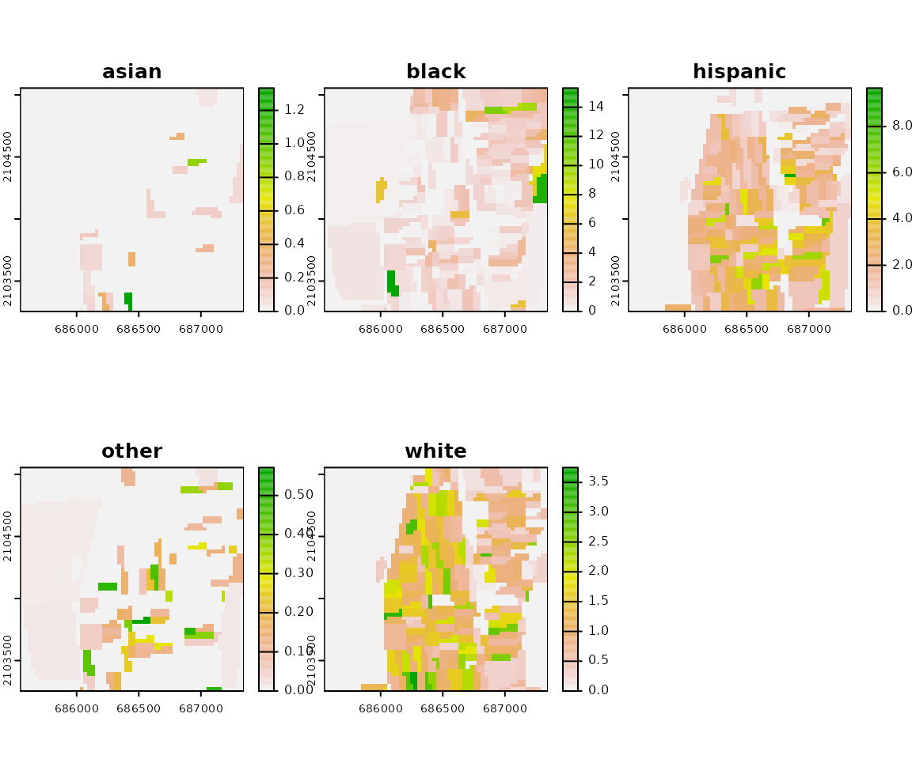

raceland: R package for a pattern-based, zoneless method for analysis and visualization of racial topography
Anna Dmowska, Tomasz Stepinski, Jakub Nowosad
2026-01-14
Source:vignettes/raceland-intro1.Rmd
raceland-intro1.RmdINTRODUCTION
The raceland package implements a computational framework for a pattern-based, zoneless analysis and visualization of (ethno)racial topography. It is a reimagined approach for analyzing residential segregation and racial diversity based on the concept of ‘landscape’ used in the domain of landscape ecology.
The proposed approach adopts a bird’s view perspective - in which visualization and quantification of racial topography (an overall organization of a spatial pattern formed by locations of people of different races) are tightly intertwined by using the same data - a high-resolution raster grid with each cell containing only inhabitants of a single race. Such grids represent a racial landscape (RL). A racial landscape (RL) consists of the mosaic of many large and small patches (racial enclaves) formed by adjacent raster grid cells having the same race categories. The distribution of racial enclaves creates a specific spatial pattern.
The racial landscape is described by exposure matrix and quantified by two metrics (entropy and mutual information) derived from Information Theory concept (IT). Entropy is the measure of racial diversity and mutual information measures racial segregation.
Racial landscape method is based on the raster gridded data, and unlike the previous methods, does not depend on the division for specific zones (census tract, census block, etc.). Calculation of racial diversity (entropy) and racial segregation (mutual information) can be performed for the whole area of interests (i.e., metropolitan area) without introducing any arbitrary divisions. Racial landscape method also allows for performing the calculation at different spatial scales.
A COMPUTATIONAL FRAMEWORK
A computational framework implemented in the raceland package allows for:
Constructing racial landscape based on race-specific raster grids.
Describing the racial pattern of a racial landscape at different scales or/and for the whole area of interests using metrics derived from Information Theory concept (entropy and mutual information).
Mapping the racial landscape.
Mapping racial diversity and segregation at different scales.
The computational framework consists of the four steps (see figure below, the blue font indicates the names of function from the raceland package).

Required packages
The computational framework requires following packages: raceland, comat, terra, sf, and dplyr.
# install required packages
pkgs = c(
"raceland",
"comat",
"terra",
"sf",
"dplyr"
)
to_install = !pkgs %in% installed.packages()
if(any(to_install)) {
install.packages(pkgs[to_install])
}Input data
Racial landscape method is based on high-resolution race-specific raster grids. Each cell in race-specific grids contains race subpopulation density. SocScape project provides high-resolution raster grids for 1990, 2000, 2010 years for 365 metropolitan areas and each county in the conterminous US. Data is available at http://www.socscape.edu.pl/index.php?id=high-resolution-grids/.
The calculation can also be performed using a spatial vector file
(e.g., shapefile) with attribute table containing race counts for
aggregated data. In such case, a spatial vector object is first
rasterized using the zones_to_rasters() function from the
raceland package (people of a given race are
redistributed to the cells by dividing the number of people by the
number of cells belonging to the particular spatial units).
Please notice that the rasterization time depends on the number of divisions and for large areas (i.e., metropolitan areas) can be time-consuming. It is recommended to use the smallest available divisions.
Here we demonstrate a computational framework using an example of the area of 60x60 cells. The input data is a high-resolution (30m) raster grids. Race-specific rasters are stored as GeoTIFFs (the directory contains five files for five race-groups: Asians, Blacks, Hispanic, others and Whites).
The SpatRaster with race-specific grids is created based on the GeoTIFF files (files will be sorted and read into SpatRaster in alphabetical order; the categories in the racial landscape will depend on the order of layers in input data - see details in the next section).
Working with high resolution grids
list_raster = list.files(system.file("rast_data", package = "raceland"),
full.names = TRUE)
race_raster = rast(list_raster)
race_raster
#> class : SpatRaster
#> size : 60, 60, 5 (nrow, ncol, nlyr)
#> resolution : 30, 30 (x, y)
#> extent : 685545, 687345, 2103255, 2105055 (xmin, xmax, ymin, ymax)
#> coord. ref. : +proj=aea +lat_0=23 +lon_0=-96 +lat_1=29.5 +lat_2=45.5 +x_0=0 +y_0=0 +ellps=GRS80 +towgs84=0,0,0,0,0,0,0 +units=m +no_defs
#> sources : asian.tif
#> black.tif
#> hispanic.tif
#> ... and 2 more sources
#> names : asian, black, hispanic, other, white
#> min values : 0.000000, 0.0000, 0.000000, 0.0000000, 0.00
#> max values : 1.333333, 15.3125, 9.666667, 0.5714286, 3.75
plot(race_raster)
Working with vector data
While using spatial vector data, the file should be read to R using
the st_read() function from the sf
package. In the next step spatial object is rasterized using
zones_to_rasters() from the raceland
package.
Function zones_to_rasters() requires three
arguments:
-
v- an sf object with aggregated attribute data -
resolution- a resolution of the output raster (below we useresolution=30, which is the same resolution as used in the SocScape grids) -
variables- a character vector with columns names from v. The values from these columns will be (1) rasterized and (2) recalculated to densities. Each column will be represented as a layer in the output SpatRaster.
pf_to_data = system.file("vect_data/block_data.gpkg", package = "raceland")
vect_data = st_read(pf_to_data)
#> Reading layer `block_data' from data source
#> `/home/runner/work/_temp/Library/raceland/vect_data/block_data.gpkg'
#> using driver `GPKG'
#> Simple feature collection with 264 features and 6 fields
#> Geometry type: POLYGON
#> Dimension: XY
#> Bounding box: xmin: 685545 ymin: 496468.7 xmax: 687345 ymax: 498268.7
#> Projected CRS: unnamed
names(vect_data)
#> [1] "GISJOIN" "ASIAN" "BLACK" "HISPANIC" "OTHER" "WHITE" "geom"
race_raster_from_vect = zones_to_raster(v = vect_data,
resolution = 30,
variables = c("ASIAN", "BLACK", "HISPANIC", "OTHER", "WHITE"))Once vector data is rasterized, there is no difference, whether race_raster object or race_raster_from_vect will be used for further analysis.
Constructing racial landscape
The racial landscape is a high-resolution grid in which each cell contains only inhabitants of a single race.
The racial landscape is constructed based on race-specific grids. Racial composition at each cell is translated to probabilities of drawing a person of a specific race from a cell. Thus, the race label of a cell is a random variable. To obtain a stochastic realization of racial landscape, we use the cell’s race probabilities and a random number generator to randomly assign specific race label to each cell (Monte Carlo procedure).
Multiple draws yield to a series of realization with a slightly different pattern (see example below). The pattern uncertainty occurs only at sub-block scale and only if there is significant sub-block racial diversity.
A single realization-based visualization is sufficiently accurate. For increased accuracy, racial topography is quantified as an ensemble average from multiple realizations. It is recommended to calculate at least 30 realizations.
Realization is constructed using the
create_realizations() function with two arguments:
-
x- SpatRaster with race-specific population densities assign to each cell -
n- A number of realizations to generate
Function returns SpatRaster object containing n realizations. Single race label in a racial landscape is assigned based on the order of race-specific grids stored in SpatRaster. For example, race_raster object has five layers named: asian, black, hispanic, other, white. The race labels in racial landscape raster will be 1 - asian, 2- black, 3 - hispanic, 4 - other, 5 - white.
# generate 100 realizations based on race_raster object
real_raster = create_realizations(x = race_raster, n = 100)
# plot five first realizations
plot(real_raster[[1:5]], col = c("#F16667", "#6EBE44", "#7E69AF", "#C77213", "#F8DF1D"))
The racial landscape provides a skewed visualization of the racial pattern because it does not take into consideration the spatial variability of the population densities. To obtain an accurate depiction of racial distribution, the values of RL must be modified to reflect race and subpopulation densities.
Function plot_realization() display realization taking
into account also subpopulation density. The function takes three
arguments:
-
x- A raster object (RasterLayer, SpatRaster, RasterBrick) with one selected realization representing a racial landscape -
y- SpatRaster with race-specific population densities -
hex- A character vector with colors specified in hexadecimal format. Colors should correspond to categories in realization (racial landscape)
# In race_colors first color corresponds to asian, second to black,
# third to hispanics, fourth to other and fifth to white)
race_colors = c("#F16667", "#6EBE44", "#7E69AF", "#C77213", "#F8DF1D")
plot_realization(x = real_raster[[1]], y = race_raster, hex = race_colors)
Describing racial patterns of racial landscape
The exposure matrix describes a racial pattern. In the domain of landscape ecology, landscape pattern can be described by a co-occurrence matrix. The co-occurrence matrix is a tabulation of cells’ adjacencies. Adjacencies between pairs of cells are defined by 4-connectivity rule (There are max. 4 adjacencies: north, east, south, and west cell as is shown in the figure below).

The co-occurrence matrix has the size K x K (K - number of categories), is symmetrical and can be calculated for any region regardless of its size or shape.
Exposure matrix is a modification of co-occurrence matrix. The exposure matrix is calculated in the same way as the co-occurrence matrix, but each adjacency contributes as a location-specific value to the matrix instead of the constant value 1. The contributed value is calculated as the average of local population densities in the two adjacent cells.
Let consider an example of the racial landscape presented below. The co-occurrence matrix is constructed using only adjacencies from the racial landscape. To obtain an exposure matrix, each cell in the racial landscape has assigned two types of information: single race class and local population density. Considering two green adjacent cells - this pair will contribute 1 to the co-occurrence matrix (one adjacent pair) and the average from 2 and 1 ((2+1)/2)=1.5) to the exposure matrix.

Calculating local subpopulation densities
Local densities of subpopulations (race-specific local densities)
along with racial landscapes are used to construct the exposure matrix.
Local densities are calculated using the create_densities()
function, which requires three arguments:
-
x- SpatRaster with realizations -
y- SpatRaster with shares of subpopulations (input data SpatRaster) -
window_size- the size, expressed in the number of cells, of a square-shaped window for which local densities will be calculated; it is recommended to use the small window_size, i.e., 10 (window_size=10means that the local densities will be calculated from the area of 10 x 10 cells).
The output is a SpatRaster with local densities calculated separately for each realization.
dens_raster = create_densities(real_raster, race_raster, window_size = 10)Exposure matrix
Here we show an example, how the exposure matrix is calculated.
Please notice, that the calculation of the exposure matrix is build-in
into the calculate_metrics() function and there is no need
to calculate exposure matrix separately.
Exposure matrix can be calculated separately using the
get_wecoma() function from the comat
package. Calculation of exposure matrix requires two arguments:
-
x- RasterLayer with one selected realization -
y- RasterLayer with local densities corresponding to selected realizations.
As default, the exposure matrix with 4-directions adjacencies
(neighboorhood = 4) is calculated using the average values
from 2 adjacent cells (fun = "mean").
exposure_mat = comat::get_wecoma(x = as.matrix(real_raster[[1]], wide = TRUE),
w = as.matrix(dens_raster[[1]], wide = TRUE))
colnames(exposure_mat) = c("ASIAN", "BLACK", "HISPANIC", "OTHER", "WHITE")
rownames(exposure_mat) = c("ASIAN", "BLACK", "HISPANIC", "OTHER", "WHITE")
round(exposure_mat, 2)
#> ASIAN BLACK HISPANIC OTHER WHITE
#> ASIAN 0.58 42.53 71.42 2.35 29.15
#> BLACK 42.53 7116.02 3290.02 136.00 1735.73
#> HISPANIC 71.42 3290.02 9843.18 142.25 3739.69
#> OTHER 2.35 136.00 142.25 17.20 49.11
#> WHITE 29.15 1735.73 3739.69 49.11 3263.18Information theory metrics (IT metrics)
For lucid quantification of racial topography, further compression of the exposure matrix is required. A racial pattern can be described (in the same way as landscape pattern in the domain of landscape ecology) by using Information Theory metrics - entropy and mutual information. Entropy is associated with measuring racial diversity, and mutual information is associated with measuring racial segregation.
Information theory metrics are calculated using function
calculate_metrics(). This function calculates the exposure
matrix and summarizes it by calculating four IT-derived matrics: entropy
(ent), joint entropy (joinent), conditional entropy (condent) and mutual
information (mutinf). The function requires the following arguments:
-
x- SpatRaster with realizations -
w- SpatRaster with local densities -
neighboorhood- adjacencies between cells can be defined in 4 directions (neighboorhood = 4) or 8 directions (neighboorhood = 8). -
fun- function to calculate values from adjacent cells to contribute to the exposure matrix,fun = 'mean'calculate average values of population density from two adjacent cells. Other available options are geometric mean ('geometry_mean') or value from a focal cell ('focal’) -
size = NULL- calculation will be performed for the whole area (see explanation later) -
threshold- the share of NA cells to allow metrics calculation.threshold = 1- calculation will be performed, even if there are 100% cells with NA values (recommended withsize = NULL)
metr_df = calculate_metrics(x = real_raster, w = dens_raster,
neighbourhood = 4, fun = "mean",
size = NULL, threshold = 1)
head(metr_df)
#> realization row col ent joinent condent mutinf
#> 1 1 1 1 1.623898 3.128522 1.504624 0.1192737
#> 2 2 1 1 1.627274 3.133749 1.506475 0.1207986
#> 3 3 1 1 1.644503 3.166851 1.522348 0.1221558
#> 4 4 1 1 1.643599 3.160675 1.517076 0.1265228
#> 5 5 1 1 1.641598 3.156520 1.514922 0.1266760
#> 6 6 1 1 1.631424 3.154740 1.523316 0.1081087IT metrics are calculated for each realization separately, and in the next step, an average value from all realization is calculated.